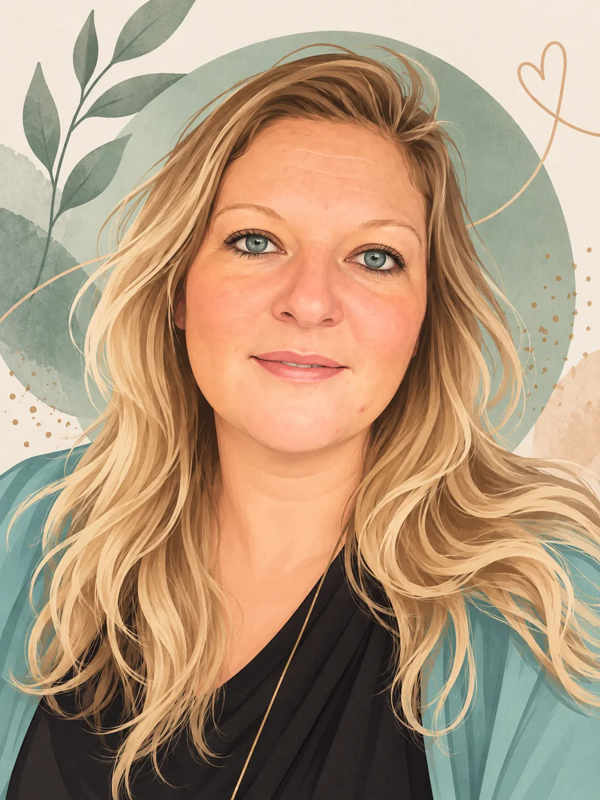

Heidi Desire Kristoffersen
Sådan tænker jeg
Jeg bygger digitale broer mellem mennesker — det er tre bevægelser, der går igen i alt, hvad jeg laver. Gå ind, hvor du er mest nysgerrig.

01
Forstå
- Research & analyse
- Brugerbehov
- Tilgængelighed (WCAG)
- Informationsstruktur
- Kommunikation
- Konceptudvikling
- AI som samarbejdspartner
- Samarbejde på tværs
- Strategi & indhold
- UX/UI design
- HTML, CSS & JavaScript
- Prototyping (Figma)
- Visuel identitet
- Digital formidling
Et lille fund — slå JavaScript til for at se det.
Et lille fund — slå JavaScript til for at se det.
Hvad du finder her
Rejsen gennem studiet, to uddybende case studies, de projekter jeg bygger som selvstændig, og en åben AI-log over, hvordan porteføljen er bygget.
Lige nu
Jeg bygger DUF — et digitalt læringshus, der guider alternative behandlere gennem opbygningen af deres egen praksis.